Google Фото перестает быть бесплатным, а Huawei уверена в будущем: итоги недели
На этой неделе Google в очередной раз доказала, что она готова поддерживать перспективные стартапы, дав Карлу Пею (сооснователю OnePlus) 15 миллионов долларов на его новый проект. Интересно, что пока он даже ничего не выпустил, но мы разобрались, чем он смог заинтересовать Google. Не менее интересная информация поступила от генерального директора Huawei. Он заявил, что компания ни при каких обстоятельствах не продаст бизнес смартфонов. Попробуем понять, что это может значить. А заодно разберемся, какие функции Google Фото теперь станут платными. Все это и многое другое в нашем итоговом выпуске новостей из мира Android.
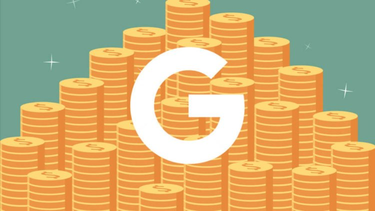Содержание
Как получить деньги от Google
Некоторые дизайнеры часто спорят на тему того, что есть черныйцвет. Одни говорят, что это все цвета в одном, а другие говорят,что это, наоборот, отсутствие любого цвета. Примерно так же можно поспорить про название новой компании сооснователя OnePlus , Карла Пея — Nothing (пер. ничего). С одной стороны, это красивый маркетинговый ход, который наверняка призван подчеркнуть простоту и доступность готовящихся продуктов. Кроме этого, подобное название вызвало большое количество обсуждений в Сети своей необычностью, а значит, что уже на старте дало хорошую рекламу. Да и в будущем можно будет красиво использовать слоганы вроде ”ничего не будет как раньше” и тому подобных. Это все хорошо, но стартап уже привлек от Google инвестиций на 15 миллионов долларов. Что разглядел поисковой гигант в молодой компании без единого продукта и когда эти продукты появятся?
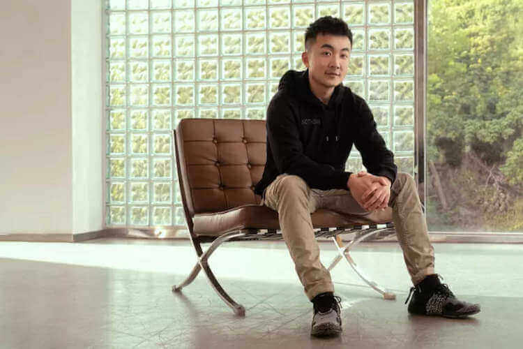Когда в конце прошлого месяца Карл Пэй представил свою новую компанию, ради которой осенью 2020 года он ушел из OnePlus, он не сказал ничего о том, что она будет производить. Бизнесмен ограничился только формулировкой о том, что это ”лондонская компания по производству потребительских технологий”. Звучит максимально ни о чем. На вопрос, что сейчас производит компания, можно ответить ее названием — ничего. Тем не менее, сейчас стало известно, что первый продукт должен выйти летом этого года. Им будут беспроводные наушники. Чуть позже в этом году компания выпустит другие продукты. В конечном итоге Карл Пэй планирует создать готовую инфраструктуру устройств, которые будут подключаться друг к другу. Несмотря на неопределенность, компания еще до представления своего бренда привлекла инвестиции от изобретателя iPod и основателя Nest Тони Фаделла, соучредителя Twitch Кевина Линя, генерального директора Reddit Стива Хаффмана, ютубера Кейси Нейстата и других. Всего было собрано 7 миллионов долларов, что нельзя назвать большой суммой в современной IT-индустрии. Несмотря на неопределенность, компания еще до представления своего бренда привлекла инвестиции от изобретателя iPod и основателя Nest Тони Фаделла, соучредителя Twitch Кевина Линя, генерального директора Reddit Стива Хаффмана, ютубера Кейси Нейстата и других. Всего было собрано 7 миллионов долларов, что нельзя назвать большой суммой в современной IT-индустрии.
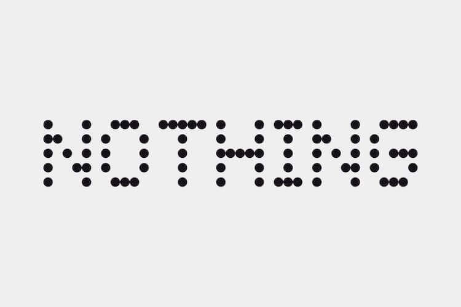Google, как и Apple, любит покупать перспективные стартапы, чтобы потом на их базе сделать что-то хорошее или просто использовать их наработки в своем бизнесе или существующих продуктах. Пока речь о покупке не идет и Google просто вкладывается в новое предприятие Карла Пея. Из интервью бизнесмена, которое он дал Bloomberg, стало известно, что Nothing завершила новый раунд финансирования в размере 15 миллионов долларов. Деньги были получены от GV (ранее Google Ventures) венчурного фонда Alphabet. Скорее всего, этого компании хватит только на первое время и нужно будет дополнительное финансирование, но начало положено. Одно то, что в молодую компанию вложил деньги такой серьезный игрок, как Google, уже говорит о многом.
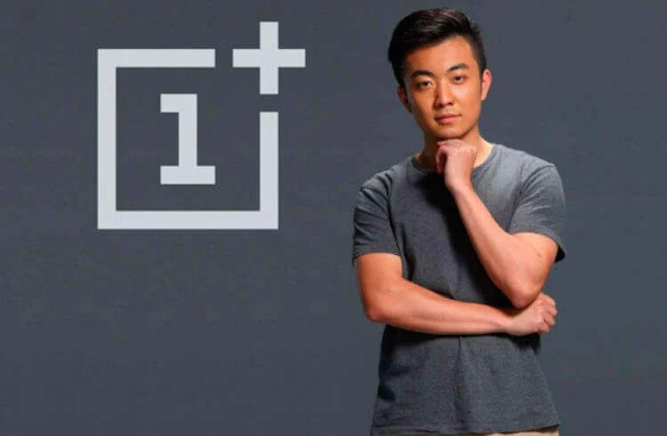Полученные деньги компания планирует потратить на расширение деятельности, укрепление команды и инвестиции в исследования и разработку продуктов. Пока мы не получили даже утечек и слухов о том, что представит компания летом этого года, кроме понимания того, что это будут беспроводные наушники. Поэтому сложно аргументировано говорить о том, с кем она будет конкурировать.Тем не менее, можно предположить, что производство беспроводных наушников Nothing приведет к конкуренции с некоторыми из крупнейших мировых технологических компаний, включая Apple, Samsung, Huawei, Sony, Bose и Sennheiser. Примечательно, что Nothing также будет конкурировать со старой компанией Пея, OnePlus, которая выпустила свои первые TWS-наушники в прошлом году. Скорее всего, Пэй принимал участие в их создании, и поэтому хорошо знаком со спецификой производства продукта.
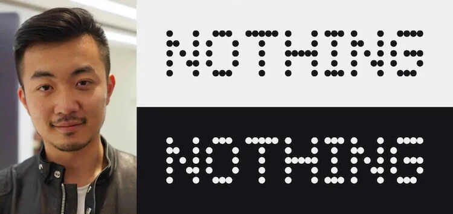Пока рассчитывать на мировое доминирование новому бренду не приходится. На первых порах это будет небольшая компания, которая может производить продукты, но вряд ли они будут настолько высокого качества, чтобы сразу побороться с признанными лидерами индустрии. Да и собранная сумма объективно очень небольшая для содержания большого штата и серьезных разработок. Наверняка новый продукт будет построен на готовых компонентах, а ”выезжать” на начальной стадии будет за счет невысокой цены. Ничего не напоминает? Примерно так несколько лет назад и начиналась история OnePlus. Если она повторится с новым брендом наушников и других гаджетов (это особенно интересно), будет очень интересно наблюдать за происходящим. А пока подождем до лета и посмотрим, что нам покажут.
Установить приложения на Android станет сложнее
Несмотря на то что большинство пользователей Android, скорее всего, не знают, что такое сайдлоадинг, плюс-минус все этим когда-либо занимались. Этот термин означает загрузку установочного файла приложения в обход штатных источников софта. То есть каждый раз, когда вы скачиваете APK из-за пределов Google Play, это называется сайдлоадинг. Казалось бы, зачем я вообще занимаюсь тем, что разъясняю вам значение настолько специфической терминологии? А для того, чтобы вы знали, как называется то, чего вас в скором времени могут и лишить.
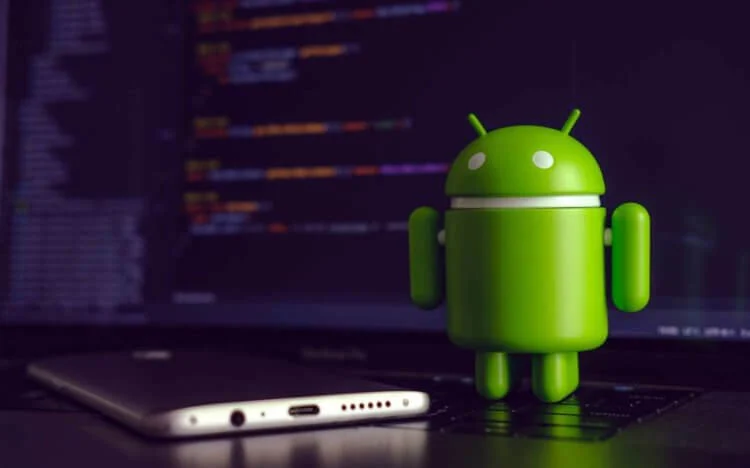Google начала постепенно экспериментировать с запретом на загрузку приложений со стороны. Нет-нет, пока вроде бы никто не собирается заблокировать все альтернативные магазины приложений вроде AppGallery или Galaxy Store. Более того, скорее всего, этого не произойдёт вообще. А вот чем Google занимается, так это блокирует установку новых версий Google Camera на старые смартфоны Pixel.
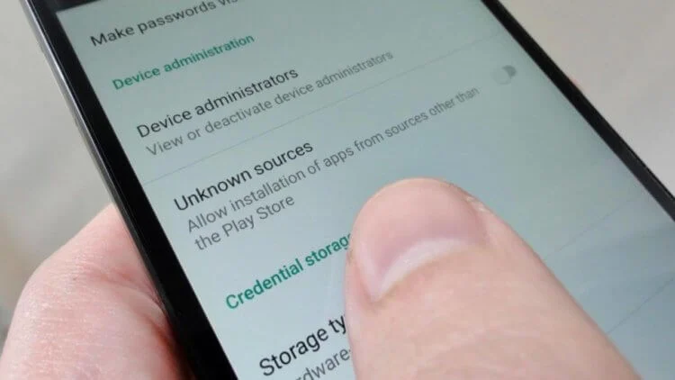О попытках Google ограничить установку новых сборок Gcam на «пиксели» прошлых лет стало известно ещё прошлой осенью. Однако тогда на это мало кто обратил внимание. В конце концов, нативная несовместимость – дело совершенно обыкновенное. Но разработчики из команды XDA изучили программный код Google Camera и выяснили, что Google целенаправленно добавила туда дополнительный уровень безопасности, препятствуя установке приложения на те смартфоны, для которых оно изначально не было адаптировано. Конечно, им удалось обойти эту защиту, но сам факт того, что Google его внедрила, говорит о многом. Поступить таким образом Google, скорее всего, решила, чтобы лишить пользователей старых смартфонов Pixel доступа к новым функциям, доступным в новой версии Gcam. В конце концов, это логично. Ведь на том, что владельцы уже неподдерживаемых аппаратов пользуются всеми преимуществами новых, бизнес не сделаешь.
Несмотря на то что пока запрет на сайдлоадинг действует в отношении только Google Camera и, как оказалось совсем недавно, Recorder, нет никакой гарантии, что Google не распространит эту практику шире в будущем. В конце концов, запретить пользователям скачивать неподдерживаемые приложения или взломанные версии, чтобы не платить за них, в её интересах. В первом случае она может спровоцировать пользователей покупать более новые смартфоны чаще, а во втором – увеличить собственный доход от взимания комиссии в Google Play.
Насколько вероятно, что Google поступит таким образом? Пока сказать сложно. С одной стороны, пользователи знают Android как открытую операционку без ограничений, характерных для iOS, и даже Павел Дуров призывал всех переходить на платформу Google именно по этой причине. Но, с другой стороны, эта открытость провоцирует распространение пиратства, снижая интерес разработчиков, мешает компании больше зарабатывать и подрывает безопасность ОС, отталкивая пользователей.
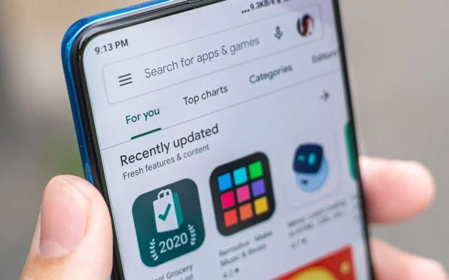Вероятность того, что Google начнёт менять Android и пойдёт по пути iOS, не следует исключать полностью. Недавно стало известно, что поисковый гигант запланировал введение новых правил для разработчиков, в соответствии с которыми они лишатся части инструментов сбора данных о пользователях. Раньше этот инструментарий позволял им и рекламным сетям формировать виртуальные портреты пользователей, а затем показывать им таргетированную рекламу. В будущем эту лавочку планируется прикрыть.
Я пока не знаю, как относиться к возможным изменениям Android, которые сделают из неё вторую iOS. Для меня, как для человека, который готов платить деньги за софт и не заинтересован в загрузке пиратского софта, это, скорее всего, плюс. Ведь в этом случае стоит повышения качества приложений, доступных в Google Play, снижения заинтересованности разработчиков в том, чтобы обмануть как можно больше пользователей, и, что самое главное, рассчитывать на то, что мы с вами перестанем быть для них товаром. А это очень важно. Но согласятся ли на такую рокировку остальные?
Платные функции Google Фото
Уже в этом году Google если не убьёт, то по крайней мере сильно покалечит «Google Фото», лишив пользователей безлимитного хранилища для фотографий и видеороликов. Очевидно, что это спровоцирует отток значительной части аудитории, которая пользовалась сервисом только из-за неограниченного пространства в облаке. Поэтому Google, предвидя утечку клиентуры, решила заранее предотвратить её, предложив более широкий спектр возможностей, чем раньше. Среди них есть как бесплатные, так и те, доступ к которым будет открываться исключительно за деньги.
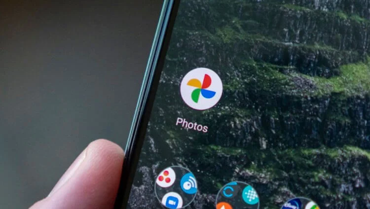Запланированный апгрейд пройдёт в два этапа. В рамках первого пользователям откроются платные функции, а бесплатные станут доступны в рамках второго. Разберёмся, что это за нововведения и стоят ли они того, чтобы за них платить. Платные функции называются только лишь условно, потому что покупать их по отдельности или пакетом Google не предлагает. Они будут доступны только подписчикам сервиса Google One, которые оплачивают доступ к облаку на ежемесячной основе. Очевидно, что поисковый гигант решил повысить привлекательность и облачной платформы, и «Google Фото».
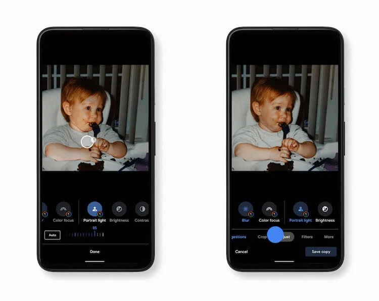Портретное освещение. В отличие от функции с аналогичным названием, доступной пользователям iOS, то, что предлагает Google, позволяет буквально настроить освещение на уже готовой фотографии. Нововведение создаёт эффект естественного света, который можно направить так, как вам нравится, либо слегка подсветив объект съёмки, либо сделав так, будто съёмка велась под прямыми лучами солнца. Получается очень интересно, а, самое главное, натурально.
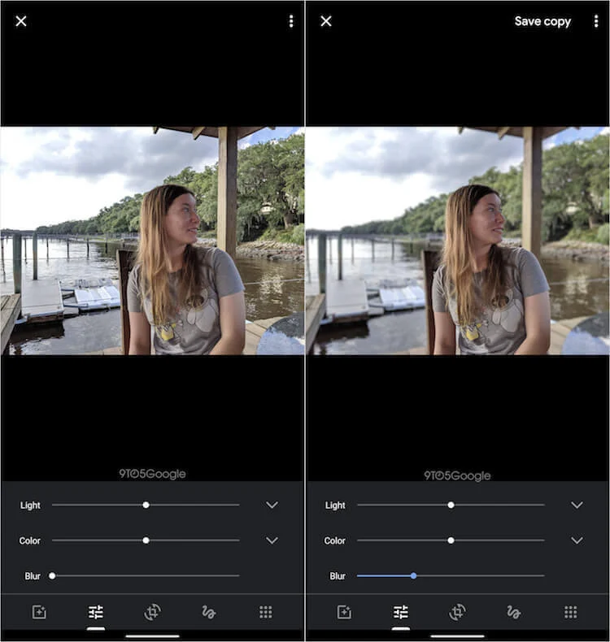Портретное размытие. Эта функция уже непосредственно относится к портретной съёмке, позволяя размывать задний фон на уже готовых снимках. Благодаря этой фишке вы можете загрузить в облако любую фотографию и применить к ней эффект размытия, получив на выходе полноценный портретный снимок. Для размытия используются те же алгоритмы, которые размывают задний фон у фотографий, сделанных на камеру Google Pixel, поэтому можно рассчитывать на качественный результат. Главное – подобрать подходящий кадр и ракурс. Помимо этих двух функций, подписчиков Google One ждут новые фильтры: Vivid, Luminous, Radiant, Ember, Airy, Afterglow, Stormy. Они уникальны тем, что появились в прошивке смартфонов Google Pixel только в декабре и до настоящего момент были их эксклюзивом. Однако, дабы удержать аудиторию «Google Фото», разработчики компании решили, что будет не лишним предложить пользователям что-то такое, ради чего они предпочтут остаться. Ведь облачное хранилище у них есть и так, значит, они гарантированно останутся после введения новых правил использования сервиса. А новые функции – это своего рода благодарность за преданность.
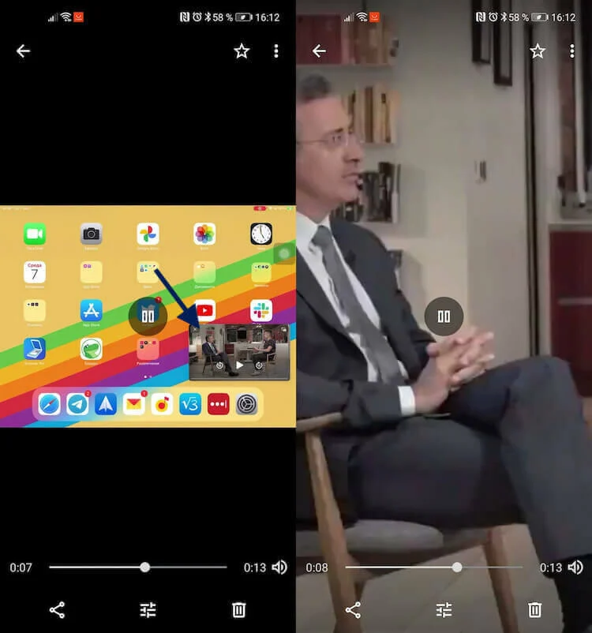Для пользователей «Google Фото», которые не хотят дополнительно платить за облачное хранилище, нововведения тоже есть, пусть и не настолько знаковые. Их ждут новые инструменты редактирования видео:
- Обрезка для изменения соотношения сторон клипа;
- Настройка яркости, контрастности, баланса белого, тенями и насыщенностью;
- Новые фильтры для видео;
- Инструменты монтажа для приближения фрагментов или перехода в любую точку видео.